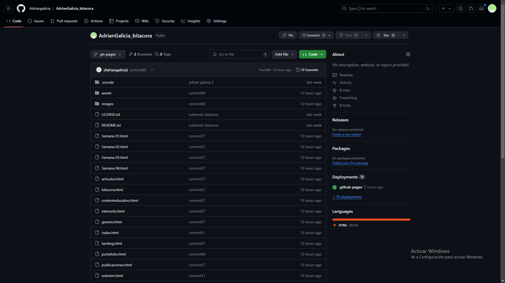

Semana 1
Presentación del docente: Nos habla de su trayectora y las carreras que ejerce.
Clase Virtual: 21/03/24
Nos creamos una cuenta de GitHub, creamos un branche gh-pages donde agregaremos los archivos de una plantilla web prestablecida.
Descargamos Visual Studio Code.
Nos decimos como salon en seleccionar una plantilla web para trabajar nuestra bitacora y portafolio.
Clase Presencial: 23/03/24
El docente nos habla más a fondo y en confianza sobre sus virtudes y vulnerabilidades. Tambien nos brinda indaciones que debemos portar dentro del aula.
Los estudiantes comienzan a brindar sus conocimientos y destrezas adquiridas en el curso de laboratorio 1 y sobre Arduino.
Formación de grupos segun a las carreras que estamos desempeñando y en que podemos beneficiar y aportar como equipo.